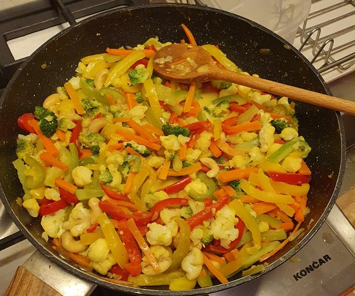

Curry Vegetables

Description
Another recipe i love making with my girlfriend. This meal is full of vegetables and it's decicious.
We like to make the vegetables a bit al dente, but prepare them however you like.
Ingredients
- Cauliflower
- Broccoli
- Cashew nuts
- 3 bell peppers
- 1 can coconut milk
- Onion
- Sesame oil
- Vegeta
- Curry spice
- Carrots
Steps
- put some sesame oil and chopped onions into the pan and heat them up
- after 4-5min add in the carrots and cashew nuts
- after another 4-5 minutes add in the bell peppers and cauliflower
- after 5 more minutes add in the broccoli
- pour in the coconut milk and add all the spices (the milk should turn golden brown from the curry)
Back to the main page